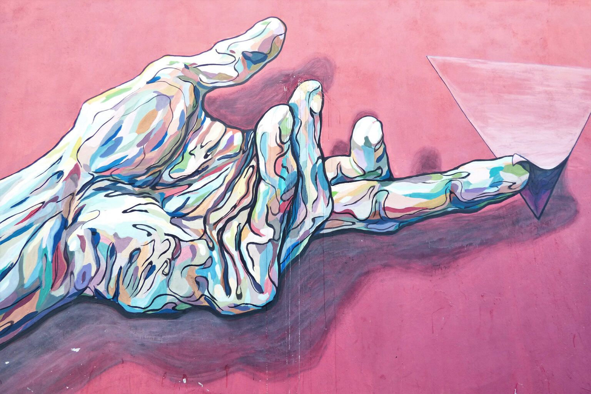
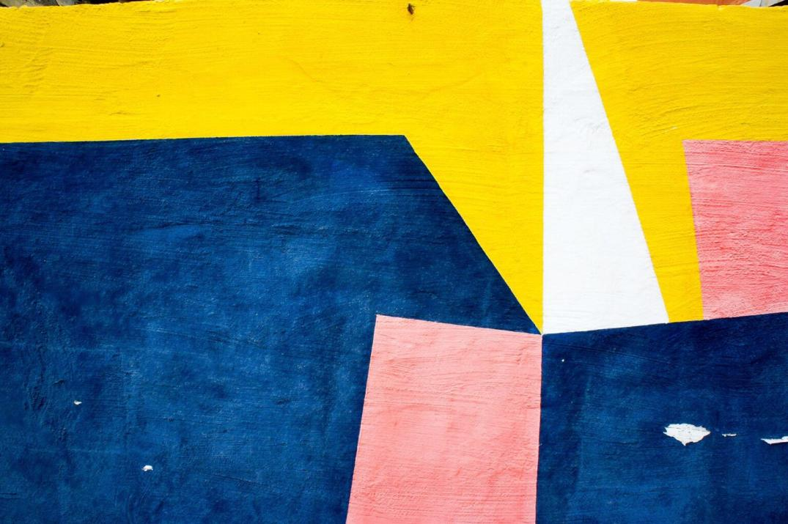

My job is simple and sophisticated, so it is possible to describe and simple, and flowery language. I love the feel and sophistication of its superiority. I like people with a keen mind and at the same time easy to talk to. These qualities can be combined perfectly natural. However, things like people look miserable, if these properties are connected to them artificially.

Modern design and a lack of love dilettantism. Looking for such designers, which all use a little beauty and no matter how much they looked around either; which you always want to do something else. Designers do not only image-makers, but also dreamers who tell stories and think. For me, all the things a good story is more important than its form.
The designer must be an interpreter, and real and virtual needs must anticipate those questions of people that they do not think, and suddenly opened in the already created objects. For me,
For me, the design — it is the quality of life. Good design has little to do with trends. Tired of listening to how he try to give the status of a frivolous fashion phenomenon. In my opinion, the designer should strive to do more than separate things.— Antonio Citterio
Minimalism has reached a certain critical point, the top. Where to go? I do not know. The main thing for the designer — to create things that are pleasing to him, the work brings satisfaction, and cooperation with the customer — satisfaction. We need to understand what the customer wants, and to connect it with your wishes and possibilities. To create something outstanding, we need the enthusiasm of both. I am a very happy person, because I worked with wonderful customers who have helped me very.
Vector minimalist seamless pattern

- • Design — is not how the object looks, but how it works.
- • Good design — is innovative.
- • A good design — is as little design as possible.
- • Good design — aesthetic.
Think about the content that you want to invest in a created object, and only then will form. The thing is your spirit. A spirit unlike forms hard copy. I want to create beautiful things, even if it’s not necessary for anyone, as a fight against ugly things. This is my intention.